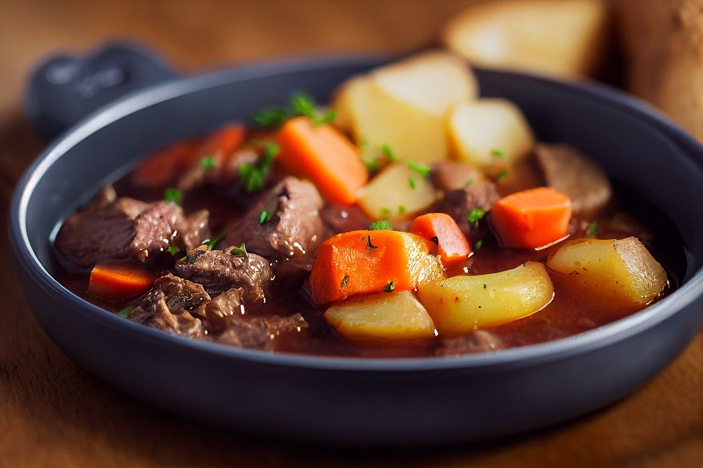

Beef Stew Recipe

Description
Beef stew is a hearty dish, often made with beef and vegetables. It is especially preferred with other side dishes such as rice.
Often, the stew is made of tender chunks of beef. Unlike other types of cooked
beef, for example, roasted, stewed beef is often well-done, hence the necessity for tender chunks.
Vegetables are essential to give it a savory and comforing feel. One can also manipulate the recipe as they
deem fit. It is easier to manipulate the recipe in beef stew compared to other types of beef. For example,
someone can opt to use water, beef broth, plain yorghut or sour cream. They can also
choose which vegetables to use and in what amount. Beef stew is one of the most intriguing
recipes. The recipe below serves three or four people.
Ingredients
- 1/2 kg beef
- 1/2 teaspon salt
- 3 carrots
- 1 onion
- 1/2 kg potatoes
- 2 tomatoes (optional)
- 1 sachettomato paste
- 2 tablespoons cooking oil
- black pepper (optional)
Steps
- Dice the onions, potatoes, tomatoes, carrots and beef separately and place each in a separate bowl
- Add onions and cooking oil into a cooking pan
- Heat while stirring until the onions turn golden brown
- Add sliced beef cubes, stir and cover the pan. Add salt and black pepper. Cook in low heat
- Check after every few minutes and stir to prevent the beef from sticking into the pan. Add very little water if it's completely dry
- Continue the process for 20 to 30 minutes
- Add potatoes and cook for 5 minutes.
- Add tomatoes. Cover and ensure they cook until they break completely
- Add carrots and cook for two minutes
- Add the tomato paste and one cup of water
- Heat until the soup starts to boil
- Voila! You're done!! Serve with the side dish of your choice